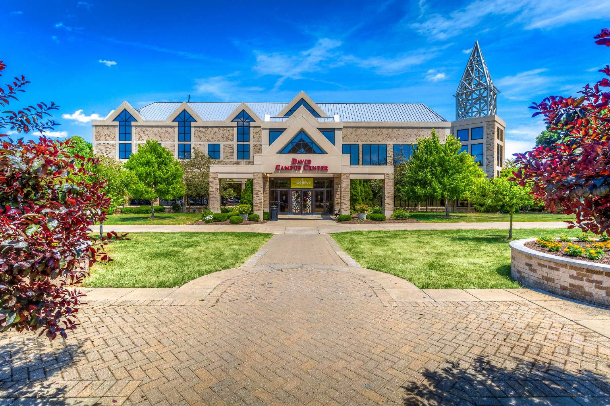
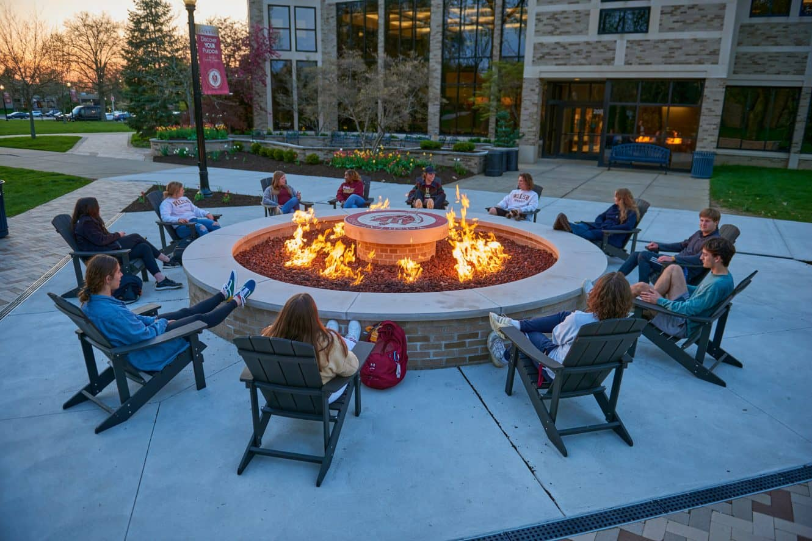
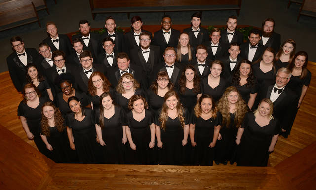

WALSH UNIVERSITY IS A HIGHLY PROFESSIONAL AND TRAINED UNIVERSITY WITH HIGHLY QUALIFIED TEACHERS. WALSH UNIVERSITY PROVIDES FREE COURSES AND TUTORIALS ONLINE WITH ADVANCED TRAINING CENTERS.
HERE STUDENTS HAVE GRADUATIONS EVERY YEAR AS SEEN IN THE PICTURES ABOVE. WALSH UNIVERSITY IS A PRIVATE ROMAN CATHOLIC UNIVERSITY IN NORTH CANTON, OHIO. IT ENROLLS APPROXIMATELY 2,700 STUDENTS AND WAS FOUNDED BY THE BROTHERS OF CHRISTIAN INSTRUCTION AS A LIBERAL ARTS COLLEGE.WALSH UNIVERSITY BECAME WALSH UNIVERSITY IN 1993. THE UNIVERSITY OFFERS MORE THAN 70 UNDERGRADUATE MAJORS AND 7 GRADUATE PROGRAMS, AS WELL AS MULTIPLE GLOBAL LEARNING EXPERIENCES.
WALSH UNIVERSITY IS A GREAT LEARNING ENVIRONMENT. THE STAFF,FACULTY,AND STUDENTS ALIKE HAVE EVERY PERSON'S BEST INTERESTS IN MIND. WALSH IS TRULY CONCERNED WITH FURTHERING BOTH EDUCATION AND WELL-BEING. WALSH UNIVERSITY HAVE SUITABLE CAMPUS AND ENVIRONMENT WHICH IS CONDUCIVE FOR LEARNING.
 HERE IS A VIDEO THAT SHOWS THE CAMPUS AND ENVIRONMENT IN A DETAILED WAY SO YOU CAN WATCH IT AND SEE HOW CLASSIC AND GOOD IT IS IN WHICH PEOPLE WILL LOVE TO BE.
The WALSH UNIVERSITY CHORAL PROGRAM IS A MUSICAL ORGANISATION DEDICATED TO THE PRINCIPAL OF DEMONSTRATING, ENHANCING AND CREATING TRUE BEAUTY THROUGH THE GIFT OF COLLECTIVE SINGING. OUR ENSEMBLES REHEARSE, PERFECT AND PERFORM MUSICAL WORKS OF HIGH DISTINCTION FROM A VARIETY OF LANGUAGES,CULTURES AND TIME PERIODS. MEMBERS SERVE AS MUSICAL AMBASSADORS, CARRYING THE BANNER OF WALSH UNIVERSITY PROUDLY IN EVERY REHEARSAL AND PERFORMANCE.
WALSH UNIVERSITY HAVE AWESOME AND AMAZING SOUND TRACKS WITH GOOD AUDIO SONGS THAT IS USED FOR SOME ACTIVIES WORLD WIDE. WITH THE CONTRIBUTION OF THE PRECIOUS PIPERS, WALSH CHORALE HAVE BEEN ABLE TO MAKE SALES OF GOOD AUDIO SONGS AND SOUND TRACKS AS SEEN BELOW.